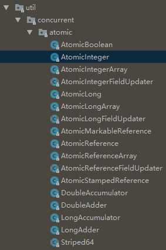

什么是原子类
在我之前的博客文章中介绍了JVM的内存模型，JVM内存模型规定了对一个变量的操作分为八步，这八步分别是：Lock（锁定）、unlock(解锁)、read（读取）、load（载入）、use（使用）、assign（赋值）、store（存储）、write（写入）；也就是说，对于一个数的操作是分为八步完成的，即对一个数的操作不是一个原子操作，如：i++，在代码层面就一行代码，看似是原子操作，实际上在指令层面并不是一步完成的，而是多部完成的。这就造成了对于变量操作的线程安全问题。
要解决这个问题很简单，我们可以使用我们之前学习的知识，利用锁来解决，但是一个简单的操作，配上锁，显得有点太过于“重量级”了；那么有没有一种不使用锁又可以实现变量操作的原子性呢？答案是有，这个方法就是我们今天说的原子类。原子类就是指通过这个类对一个变量的操作都是原子性的，操作不可分割，这样就保证了变量操作的线程安全性。
Java的原子类位于java.util.concurrent.atomic包下

AtomicInteger类源码解析
使用原子类就可以很简单的实现对一个变量的原子操作，原子类的实现原理都差不多，通过调用Unsafe类的方法使用CAS算法得以实现原子类，以AtomicInteger为例，我们来看下AtomicInteger类提供给我们的几个主要方法的源码；
AtomicInteger有三个成员变量：
1 | private static final Unsafe unsafe = Unsafe.getUnsafe(); |
其中value是用来保存值的，由于AtomicInteger类的原子操作是依赖于Unsafe实现的，所以AtomicInteger类成员变量unsafe保存了Unsafe类的实例对象，valueOffset是value变量在内存里的偏移量。
构造方法：
1 | public AtomicInteger(int initialValue) { |
有参数构造方法传入一个int类型数据，在构造时就已经初始化了value变量。
获取value值：
1 | //获取value值 |
getAndSet方法：
1 | public final int getAndSet(int newValue) { |
调用Unsafe类本地方法实现，先返回当前值，然后设置为新值；
compareAndSet方法：
1 | public final boolean compareAndSet(int expect, int update) { |
compareAndSet方法给value使用CAS算法设置一个指定的值，需要传入预期值和设置的新值；
其他的一些主要方法：
1 | //获取值并加一 |
总结
原子类的实现基本都是通过调用Unsafe类的方法实现的，我们可以自己获取到Unsafe类的实例来实现一个我们自己的原子类。CAS算法是保证原子类操作原子性的重要依据。


本文首发于我在万达摆地摊's blog，转载请注明来源